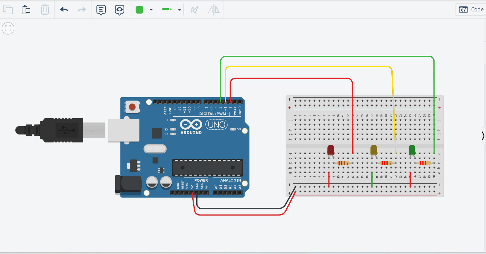
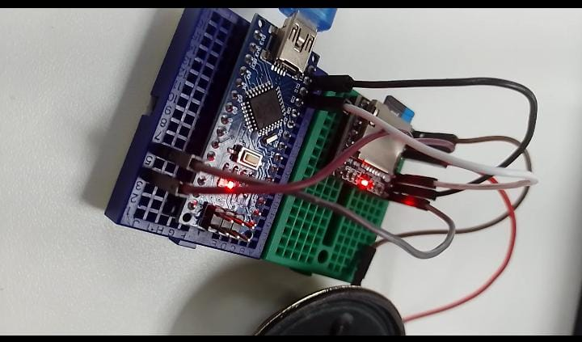

|
Anthony Scott Ramírez Chavez
|
 |
De manera grupal debimos trazar un plan con el que convencer al resto de la case que la ODS 3 era la mejor inversión a futuro. |
 |
En esta dinamica debimos de dibujar algun simbolo distingible, para luego ser llevado a un programa para poder ser interpredado en 3D. |
 |
Trabajamos en propuestas creativas para resolver problemas, yo propuse una alcancia digital con seguiridad de bobeda |
|  |
Dentro de tinkercad, arme un circuito de semaforo el cual actuaria por medio de tramos de tiempo programados. |
 |
En clase teniamos que armas varios circuitos con el Arduino en fisico, para luego programarlas para relizar distintas tareas. |
|  |
Realizamos grupalmente un circuito del semaforo, añadido a eso un pequeño reproductor de sonido que reproducia un audio grabado. |